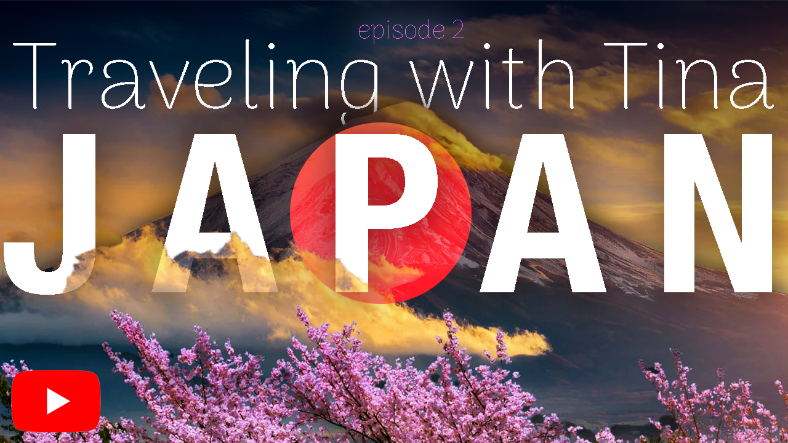
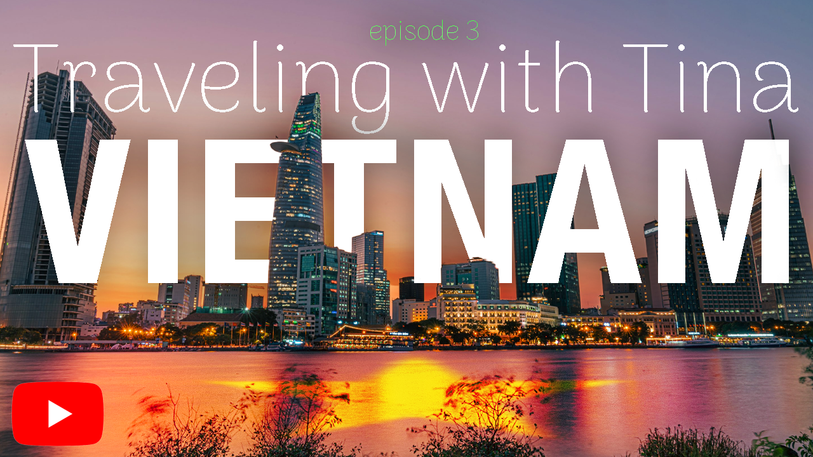
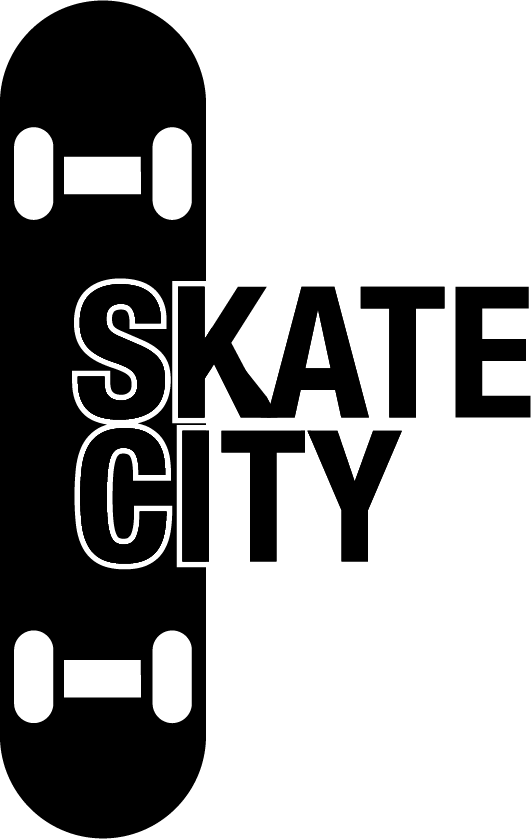
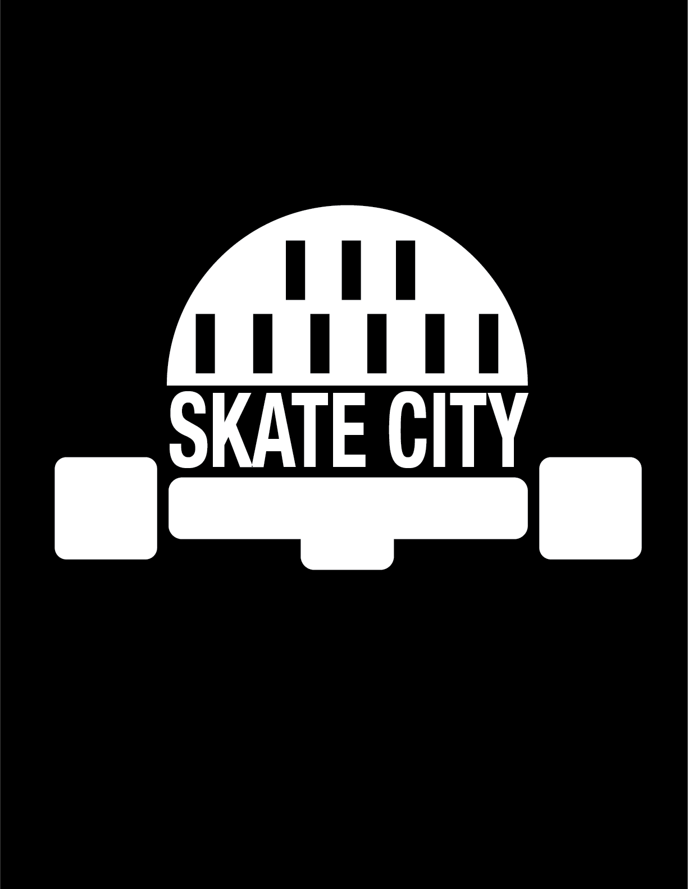
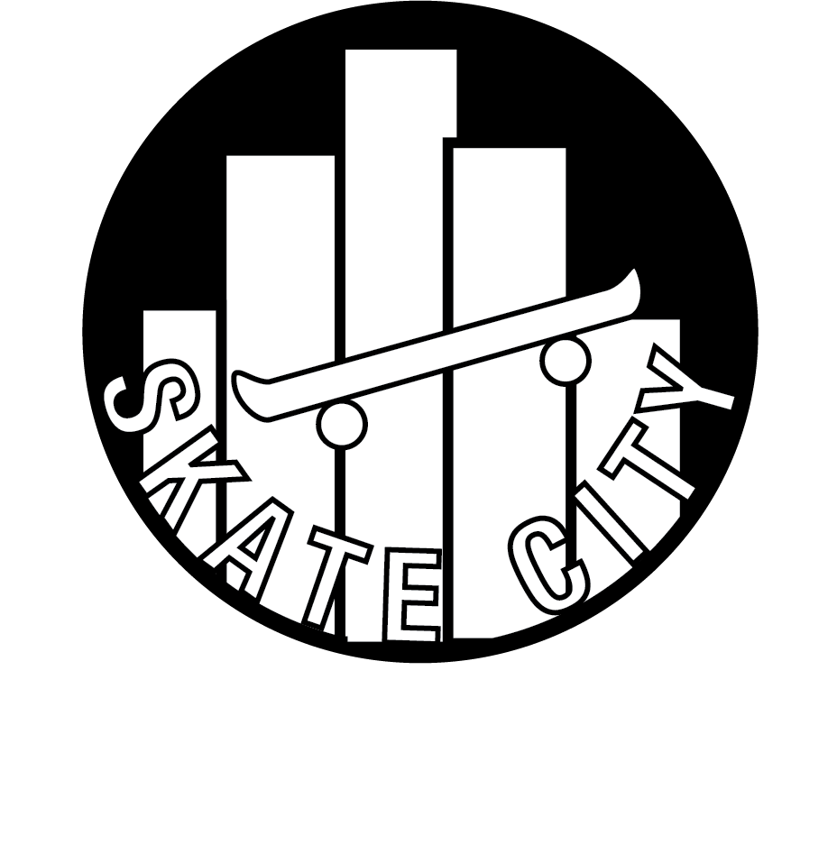

This project was a YouTube thumbnail made using Adobe Photoshop because it was quick for layering and text. I learned how to balance images and bold fonts for small screens, and it challenged me to focus on clear design over decoration.
🎬 This short video was edited in Adobe Premiere because it offered flexible tools for cutting and transitions. I learned to match timing and visual flow. It was tricky initially, but I liked seeing how editing choices changed the mood.

This energetic thumbnail was created in Adobe Photoshop to highlight strong colors and motion. I experimented with high-contrast visuals, and I learned how important fast visual impact is to catch a viewer’s attention.

This project was a minimal-style thumbnail made with Adobe Photoshop, which helped me keep a clean layout. It was initially difficult to leave extra space, but I learned that simple designs can communicate ideas more powerfully.
🎵 I created this audio piece using Adobe Audition for its easy layering and sound effects. Balancing background sounds was difficult initially, but I learned how small adjustments made the final project sound more professional.

This brand logo was created in Adobe Illustrator because it offered precision with vector shapes. I learned to simplify complicated ideas into basic symbols, which was harder than expected but very rewarding.

This playful logo was designed using Adobe Illustrator for its flexible typography tools. I learned how color and letter style can completely change a brand’s feeling, and it taught me to design with emotion.

This professional logo was made in Adobe Illustrator because it gave me fine control for minimal layouts. Designing something simple but strong was challenging, but I learned that clean lines leave the biggest impact.